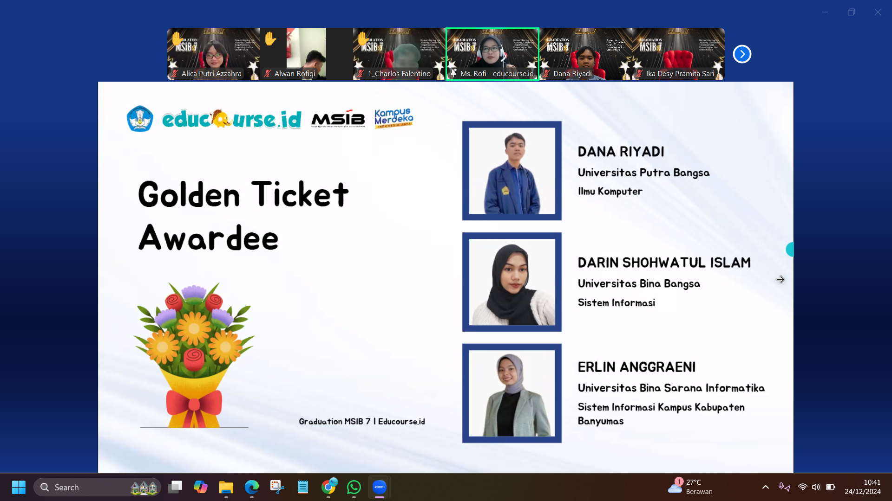
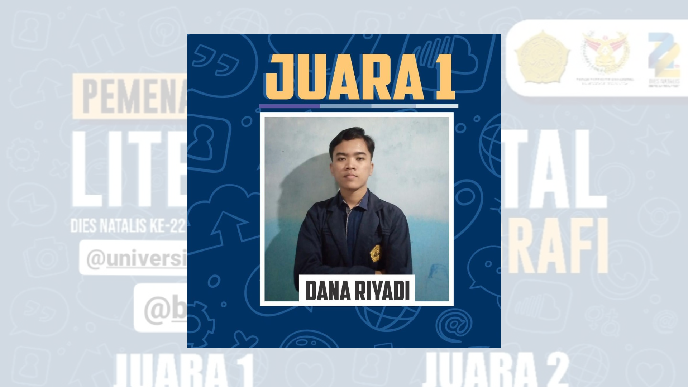
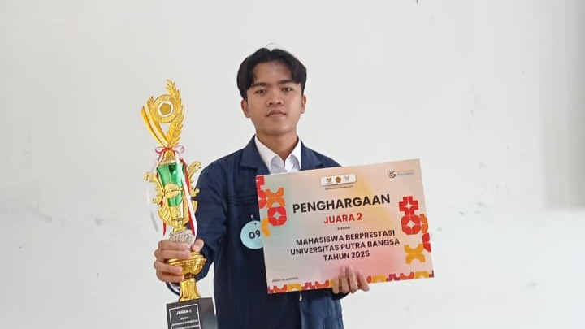
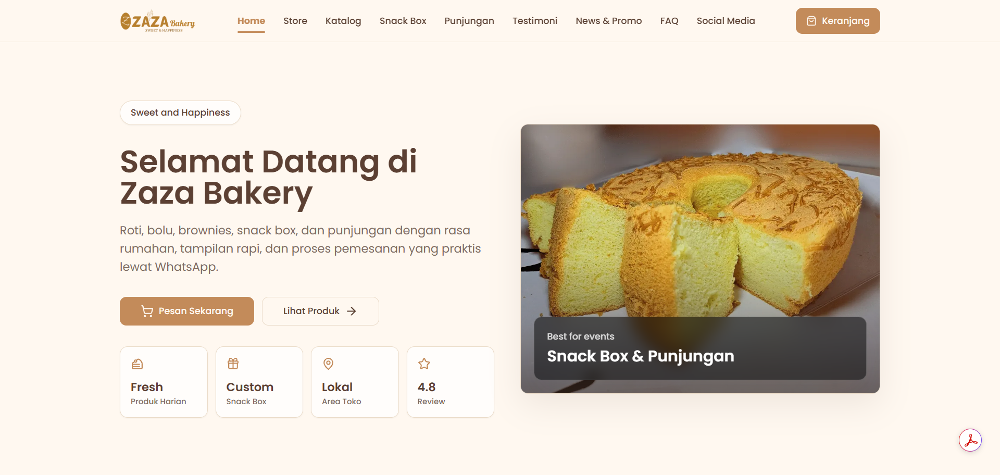

Pendidikan
Program Studi S1 Ilmu Komputer, Universitas Putra Bangsa, Kebumen, Jawa Tengah.

Saat ini berfokus sebagai Web Developer & Graphic Designer, mengembangkan platform web serta menghasilkan karya desain visual yang modern, kreatif, dan profesional.
Program Studi S1 Ilmu Komputer, Universitas Putra Bangsa, Kebumen, Jawa Tengah.
Dari magang, studi independen, hingga organisasi kampus, pengalaman saya banyak pada bidang pengembangan website, desain publikasi visual, dan pengelolaan media digital.


Berbagai pencapaian, kompetisi, dan sertifikasi yang telah diraih dalam pengembangan web, fotografi, dan kegiatan akademik.

WEB DEVELOPERMeraih Golden Ticket pada program Studi Independen Bersertifikat "Platform and Web Developer (Specialist Education Platform)" Batch 7 oleh Educourse.id x Kampus Merdeka (Sep–Des 2024), sebagai pengakuan atas performa terbaik selama program. Membangun kemampuan pengembangan web dari sisi platform dan sistem edukasi digital.

FOTOGRAFIMeraih Juara 1 Lomba Fotografi dalam rangkaian Lomba Literasi Digital Dies Natalis ke-22 Universitas Putra Bangsa (2023). Menunjukkan kepekaan komposisi visual dan kemampuan bercerita melalui gambar — modal penting dalam desain grafis dan visual storytelling.

AKADEMIKMeraih Juara II Pemilihan Mahasiswa Berprestasi Internal Universitas Putra Bangsa (2025). Mencerminkan konsistensi akademik dan kemampuan bersaing di tingkat kampus.
Beberapa proyek pilihan di bidang web development, desain grafis, dan video.
 WordPress & Next.js
WordPress & Next.js
Website resmi LP3M Universitas Putra Bangsa yang dikembangkan dalam dua versi, yaitu menggunakan WordPress dan Next.js dengan database MySQL. Dilengkapi integrasi Looker Studio untuk mengolah dan menampilkan visualisasi data penelitian secara interaktif.
Lihat website WordPress Site
WordPress Site
Website resmi Fakultas Sains dan Teknologi (FST) serta Fakultas Ekonomi dan Bisnis (FEB) Universitas Putra Bangsa berbasis WordPress. Menampilkan informasi akademik, berita kegiatan terkini, dan profil program studi.

WordPress & Next.jsWebsite company profile toko roti Zaza Bakery yang dikembangkan dalam dua versi menggunakan WordPress dan Next.js. Di-hosting menggunakan Vercel, Supabase, dan Anymhost. Menampilkan katalog produk, fitur pemesanan via WhatsApp, testimoni pelanggan, FAQ, dan tautan media sosial.
Lihat website Laravel App
Laravel App
Aplikasi web manajemen rapat BEM UPB yang dibangun sebagai projek skripsi menggunakan Laravel (PHP), database MySQL, wireframe Figma, dan hosting Anymhost. Fitur: penjadwalan rapat, pengumuman via WhatsApp (Fonnte) & email SMTP, presensi berbasis geolocation dan foto selfie, serta notulensi dan dokumentasi rapat.
Lihat website Django App
Django App
Aplikasi web pendaftaran daycare dibangun dengan Django (Python), HTML, CSS, dan SQLite. Fitur pendaftaran anak secara online, pemantauan perkembangan anak, dan informasi parenting.
 UI/UX Design
UI/UX Design
Rancangan UI/UX aplikasi My UKM untuk pengelolaan Unit Kegiatan Mahasiswa secara digital. Memudahkan pendaftaran anggota dan pencatatan presensi kegiatan UKM melalui aplikasi mobile.
Koleksi desain grafis yang seluruhnya dikerjakan menggunakan Canva — diawali dengan riset referensi visual, lalu dikembangkan dan disesuaikan dengan konsep serta gaya sendiri. Karya mencakup berbagai kebutuhan publikasi digital seperti ucapan resmi, peringatan hari besar nasional, dokumentasi kegiatan, promosi event, hingga konten media sosial organisasi. Selain Canva, saya juga memiliki kemampuan dasar menggunakan CorelDRAW dan Adobe Photoshop untuk kebutuhan desain yang lebih teknis.


Koleksi karya videografi dan penyuntingan video yang diproduksi menggunakan Adobe Premiere Pro, mencakup video profile resmi organisasi, videografi event kampus, serta penyuntingan visual sinematik.
 YouTube
YouTube
Video profile resmi BEM Universitas Putra Bangsa 2025 – Kabinet Bima Cita yang diproduksi dan disunting menggunakan Adobe Premiere Pro. Menampilkan visi, misi, dan semangat pengabdian kabinet dalam karya sinematik yang profesional.
Tonton di YouTube YouTube
YouTube
Dokumentasi aksi papermob spektakuler dalam rangkaian kegiatan Prospek UPB 2025. Proses editing dan penyusunan klip dikerjakan menggunakan Adobe Premiere Pro, menampilkan formasi visual ratusan mahasiswa baru sebagai simbol kebersamaan kampus.
Tonton di YouTubeTerbuka untuk diskusi proyek website, desain visual, maupun kebutuhan kolaborasi digital lainnya.